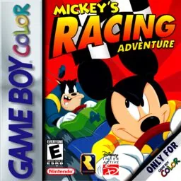
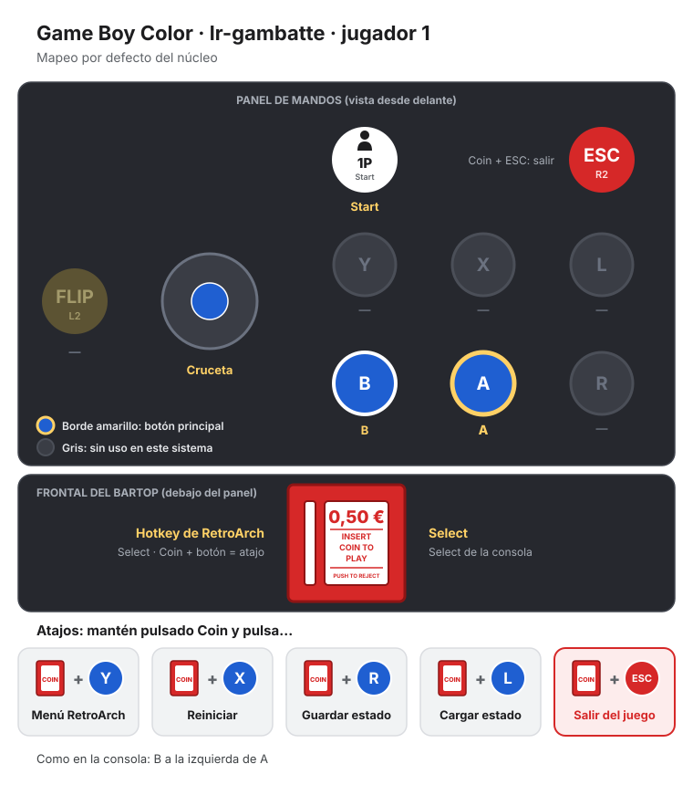
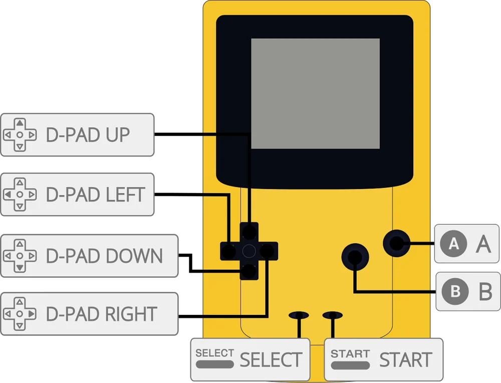

Game Boy Color
Mickey's Racing Adventure
- Año: 1999
- Desarrollador: Rareware
- Género: Carreras
- Jugadores: 1 jugador
En el pueblo de Mickey todos preparan un gran carnaval, pero el malvado Pete roba las carrozas y los adornos y deja una carta en la que les reta a una carrera para recuperarlos. Es una aventura con carreras en vista isométrica: con Mickey y sus amigos se recorre el pueblo, se gana dinero para mejorar el coche y se buscan fichas de tren para viajar a otros mundos y desafiar a Pete y sus secuaces. Pluto puede olfatear el pueblo en busca de secretos y túneles con minijuegos, y Magica de Hechizo vende hechizos para las carreras.
Controles
qué botones aceleran, frenan y usan los objetos (⚠️ no he encontrado los controles). ¿Va fluido?
Game Boy Color: dos botones.
| Panel | Juego |
|---|---|
 | B |
 | A |
 | Start |
 | Select |
+  | Salir del juego |
El panel en Game Boy Color




Argumento
Recopilado de internet (2026-11-04). Lo marcado con ⚠️ no está probado en la bartop.
Un día, Pete y sus secuaces ven a Mickey y sus amigos y deciden fastidiarles: se suben a unos coches y roban algo a cada uno, a Mickey, Minnie, Donald, Daisy y Goofy. Pete les deja una nota: para recuperar sus cosas, tienen que ganarles en una carrera.
Final: ⚠️ no lo he encontrado; según el vídeo, al final se corre contra Pete en su mansión y hay un final verdadero si se completa todo.
Fuentes
Jugabilidad
Recopilado de internet (2026-11-04). Lo marcado con ⚠️ no está probado en la bartop.
- Carreras con aventura de Rare y Nintendo (1999), en perspectiva isométrica, por tierra y por agua. Para un jugador.
- Objetivo: ganar carreras para recuperar lo que robó Pete. Por el camino se compran mejoras, pistas y juegos extra.
- Pueblo de Mickey: la Oficina de Correos y la Imprenta se abren cambiando nueces y pagando Disney Dólares a Chip y Chop para conseguir sus llaves.
Botones según las guías (⚠️ por confirmar)
- ⚠️ No he encontrado los controles.
Fuentes
Guía de niveles
Recopilado de internet (2026-11-04). Lo marcado con ⚠️ no está probado en la bartop.
| Personaje | Pruebas |
|---|---|
| Mickey | Puzle del tren · Round Table Trouble · Drawbridge Derby |
| Minnie | Puzle del tren · Pioneer Prairie · Frozen Frontier · Moat Madness · Pete's Dungeon · River Ruckus · Pete's Hunting Hideout |
| Daisy | Puzle del tren · Raceway · Crazy Curves · Doughnut Derby · Pete's Dessert Disaster |
| Donald | Puzle del tren · Swashbuckling Sand Chase · Cutthroat Cove · Jolly Roger Ramps · Pete's Treasure Oasis |
| Goofy | Puzle del tren · Roller Coaster Roadway · Really Rapid Rapids · Fairground Follies · Pete's Big Top Showdown |
| Final | Mansión de Pete: puzles y la carrera contra Pete |
- Cada tanda empieza con un puzle del tren; los jefes (en negrita) son carreras contra Pete. Nombres: los de los capítulos del vídeo.
Objetos
Recopilado de internet (2026-11-04). Lo marcado con ⚠️ no está probado en la bartop.
| Objeto | Qué hace |
|---|---|
| Nueces y Disney Dólares | Para conseguir las llaves de Correos y la Imprenta |
| Mejoras del vehículo | Se compran |
| Pistas | Se compran |
Fuentes
Trucos y secretos
Recopilado de internet (2026-11-04). Lo marcado con ⚠️ no está probado en la bartop.
Secretos
- Diez modos extra (según el vídeo): Imprenta, modo disco, submarino, pinball, cámaras distintas, turbo, contrarreloj, modo clásico y coche teledirigido.
- Final verdadero al completarlo todo.
Fuentes
Longplay

Primera de las dos partes de una partida completa al 100 % en Game Boy Color (70 min), de Longplay Universe: Mickey's Racing Adventure (100%+Bonus) | Part 1 of 2 | GBC | Longplay | Walkthrough #161 [4Kp60].
Pulsa el minuto de un nivel para ver el vídeo desde ese punto.
Pruebas
| Tramo | Pruebas |
|---|---|
| Mickey | |
| Minnie | |
| Daisy | |
| Donald | |
| Goofy | |
| Otros momentos | Créditos ▶ 1:07:54 |
Segunda parte
Segunda parte de la misma partida (113 min), de Longplay Universe: Mickey's Racing Adventure (100%+Bonus) Part 2 of 2. Junto a cada momento, el minuto en que empieza en ese vídeo.
| Tramo | Momentos |
|---|---|
| Objetos y mejoras | |
| Final | |
| Extras |